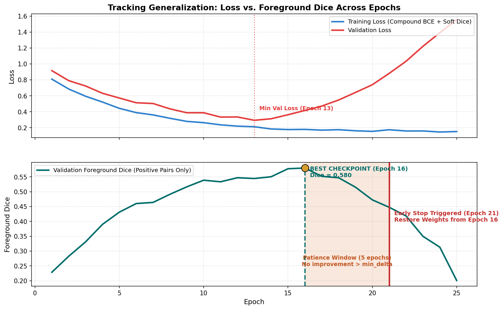

Early Stopping, Checkpoint Governance, and Validation Drift
In an ideal theoretical world, training a neural network would proceed until the training loss reaches zero and the validation metric reaches a smooth, permanent plateau. In real-world industrial surface segmentation, however, the relationship between training loss, validation loss, and task-specific overlap metrics is far more complex.
A network trained for too many epochs will inevitably memorize idiosyncratic surface noise, surface reflections, and camera lighting variations, leading to overfitting. Conversely, halting training too early leaves the model in an underfitted state where fine scratch boundaries remain blurred.
This guide explores the mechanics of early stopping, establishes rigorous checkpoint governance, warns against the subtle hazard of holdout overfitting (validation drift), and provides a framework for controlled model selection.
1. Observable Problem: The Checkpoint Dilemma
Consider the following validation history from a 30-epoch training run on a held-out validation fold:
Training History Observation:
Epoch 05: Val Loss = 0.420 | Val Foreground Dice = 0.380
Epoch 10: Val Loss = 0.245 | Val Foreground Dice = 0.520
Epoch 14: Val Loss = 0.228 | Val Foreground Dice = 0.565 <-- Minimum Validation Loss!
Epoch 18: Val Loss = 0.235 | Val Foreground Dice = 0.610
Epoch 22: Val Loss = 0.248 | Val Foreground Dice = 0.638 <-- Maximum Foreground Dice!
Epoch 26: Val Loss = 0.285 | Val Foreground Dice = 0.615
Epoch 30: Val Loss = 0.330 | Val Foreground Dice = 0.582 <-- Final Checkpoint (Overfitted)Notice the crucial divergences:
- Loss vs. Metric Divergence: Validation loss reached its minimum at Epoch 14, but Foreground Dice continued climbing for another 8 epochs, peaking at Epoch 22!
- The "Last Checkpoint" Trap: If the student deploys the weights from the final epoch (Epoch 30), their model has already degraded by 5.6 Dice points (\(0.638 \to 0.582\)).
- The "Premature Exit" Trap: If the student stopped training as soon as validation loss ticked upward after Epoch 14, they would have missed the best segmentation checkpoint entirely.
To manage this, we must formalize early stopping as an explicit, rule-governed system.
2. Early Stopping Dynamics

Figure 3.1: Annotated validation trajectory illustrating validation loss minimum versus foreground Dice peak, patience window tolerance, metric noise, and automatic rollback to the best checkpoint.Early stopping is governed by four core parameters:
1. The Monitored Quantity (\(M\))
What signal determines whether the model is improving?
- Validation Loss: Standard deep learning default, but often misaligned with competition metrics due to well-calibrated background probability creep.
- Validation Mean Dice (
dice_mean): Dangerous due to the "clean-pair inflation trap" (see Guide 05). - Validation Foreground Dice (
foreground_dice): Evaluates Dice overlap exclusively on ground-truth positive pairs. Highly recommended for checkpoint selection. - Competition Weighted Proxy Score: Balances foreground Dice (70%), clean-image false positive penalty (20%), and empty-pair accuracy (10%).
2. Direction of Improvement (mode)
mode='min': For loss functions where lower is better (\(M_{\text{current}} < M_{\text{best}}\)).mode='max': For Dice and accuracy metrics where higher is better (\(M_{\text{current}} > M_{\text{best}}\)).
3. Minimum Improvement Delta (\(\delta_{\min}\))
Stochastic mini-batch gradient descent introduces natural variance into validation scores. A model whose Dice fluctuates from \(0.6201\) to \(0.6203\) has not meaningfully improved. The parameter \(\delta_{\min}\) (e.g., \(0.002\) or \(0.005\)) acts as a noise filter:
4. Patience Window (\(p\))
The number of consecutive epochs without improvement \(> \delta_{\min}\) that training is allowed to continue before being stopped:
Typical patience values in surface segmentation range from \(p = 4\) to \(p = 7\) epochs. A patience window that is too short (\(p = 1\) or \(2\)) stops prematurely on normal validation noise; a window that is too long (\(p > 15\)) wastes expensive GPU compute on an overfitted model.
3. Checkpoint Governance: The "Last" vs. "Best" Contract
A professional training loop maintains two distinct checkpoint files on disk:
checkpoints/fold0/
├── last.pt # Contains state from the MOST RECENT completed epoch (e.g. Epoch 26)
└── best.pt # Contains state from the HIGHEST SCORING epoch (e.g. Epoch 22)The State Dictionary Contract:
A complete checkpoint must contain more than just model weights. To allow seamless resumption and auditing, it must serialize:
checkpoint = {
"epoch": epoch,
"best_score": best_score,
"stale_epochs": stale_epochs,
"selection_metric": "foreground_dice",
"model_state_dict": model.state_dict(),
"optimizer_state_dict": optimizer.state_dict(),
"scheduler_state_dict": scheduler.state_dict(),
"scaler_state_dict": scaler.state_dict(), # AMP gradient scaler state
"rng_state": torch.get_rng_state(), # For deterministic resumption
"config": cfg.snapshot(),
}[!IMPORTANT] Atomic Saving Protocol: Never overwrite
best.ptdirectly. If your process runs out of disk space or is interrupted mid-write,best.ptwill be corrupted. Always save to a temporary file (best.pt.tmp) and perform an atomic filesystem replacement:torch.save(checkpoint, "best.pt.tmp") os.replace("best.pt.tmp", "best.pt")
4. The Holdout Overfitting Hazard (Validation Drift)
One of the most insidious traps in competitive machine learning is overfitting to the validation holdout.
The Mechanism of Information Leakage:
- You establish a clean \(80/20\) train/validation split (Fold 0).
- You run 50 experiments: tuning learning rates, testing schedulers, tweaking loss weights, adjusting early stopping patience, and sweeping post-processing thresholds.
- In every experiment, you select the checkpoint that scores highest on Fold 0.
- The Consequence: Even though model weights were updated only on training data, your human decisions (and early stopping decisions) were updated on Fold 0!
- Over time, your pipeline selects models that happen to fit the statistical idiosyncrasies of that specific 20% holdout sample. When submitted to the private Kaggle test set, performance drops significantly.
Defensive Governance:
-
Multi-Fold Out-of-Fold (OOF) Validation: Evaluate decisions across all 5 folds of your combination-stratified split. A training improvement is only genuine if the average 5-fold OOF score increases consistently.
-
Fixed Protocol Invariants: Decide your early stopping metric, threshold grid, and patience before running experiments. Do not tweak stopping rules post-hoc to retroactively favor a particular run.
-
Record All Artifacts: Store the exact checkpoint hash (
sha256) and training log history with each saved model.
5. Diagnostic Symptoms: Causes and Checks
| Observable Symptom in Logs | Root Cause | Verification Check | Corrective Action |
|---|---|---|---|
| Training stops at Epoch 3, even though model has barely begun learning. | mode parameter inverted (e.g. mode='min' passed for Dice metric), or min_delta set excessively high (\(0.10\)). |
Check early stopping initialization logs; verify score comparison logic. | Set mode='max' for Dice; set min_delta to a realistic value (\(0.002\) to \(0.005\)). |
| Validation loss increases steadily while Foreground Dice continues climbing. | Expected phenomenon: probability calibration drift. The model becomes more confident on easy background pixels, causing BCE loss to rise slightly, but thresholded masks improve. | Inspect probability distributions; evaluate Dice vs. Loss curve divergence. | Monitor foreground_dice or the competition weighted proxy for checkpoint selection, not raw loss. |
| Model performance on Kaggle test set is far worse than the best validation checkpoint. | Holdout overfitting: early stopping selected a noisy outlier epoch that overfit specific validation images. | Check validation score standard deviation across folds (OOF); inspect validation predictions. | Evaluate 5-fold cross-validation; increase early stopping patience slightly (\(p = 5\)); increase regularizing augmentations. |
Process crashes mid-save, leaving an unreadable zero-byte best.pt. |
Non-atomic file write interrupted by GPU timeout or disk quota exhaustion. | Attempt torch.load('best.pt') to verify archive integrity. |
Use the temporary write + os.replace atomic saving pattern. |
6. Implementation Pattern: Robust Early Stopping Class
Here is a complete, production-grade EarlyStopping implementation in PyTorch:
import copy
import os
import torch
import torch.nn as nn
class EarlyStopping:
"""Manages early stopping logic, patience counting, and atomic checkpoint persistence."""
def __init__(
self,
patience: int = 5,
min_delta: float = 0.003,
mode: str = "max",
checkpoint_path: str = "best.pt",
):
self.patience = patience
self.min_delta = min_delta
self.mode = mode
self.checkpoint_path = checkpoint_path
self.stale_epochs = 0
self.best_score = None
self.best_epoch = 0
self.should_stop = False
def step(
self,
current_score: float,
epoch: int,
model: nn.Module,
checkpoint_payload: dict,
) -> bool:
"""Evaluates current epoch score. Saves checkpoint atomically if score improves."""
if self.best_score is None:
self._save_new_best(current_score, epoch, model, checkpoint_payload)
return True
if self.mode == "max":
improved = current_score > (self.best_score + self.min_delta)
else:
improved = current_score < (self.best_score - self.min_delta)
if improved:
self._save_new_best(current_score, epoch, model, checkpoint_payload)
self.stale_epochs = 0
return True
else:
self.stale_epochs += 1
if self.stale_epochs >= self.patience:
self.should_stop = True
return False
def _save_new_best(self, score: float, epoch: int, model: nn.Module, payload: dict):
self.best_score = score
self.best_epoch = epoch
# Inject model state into payload
payload["model_state_dict"] = model.state_dict()
payload["best_score"] = score
payload["epoch"] = epoch
# Atomic file write
tmp_path = f"{self.checkpoint_path}.tmp"
torch.save(payload, tmp_path)
os.replace(tmp_path, self.checkpoint_path)
print(f"-> [NEW BEST] Epoch {epoch:02d}: {score:.4f} saved to {self.checkpoint_path}")7. Ungraded "Try It": Checkpoint Selection Analysis
Examine this fictional training run log:
Monitored Metric: Validation Foreground Dice (mode='max')
Patience: 4 epochs | Min Delta: 0.004
Epoch 08: Score = 0.510 (Best: 0.510, Stale: 0) -> New Best
Epoch 09: Score = 0.518 (Best: 0.518, Stale: 0) -> New Best (+0.008 > 0.004)
Epoch 10: Score = 0.520 (Best: 0.518, Stale: 1) -> No significant gain (+0.002 < 0.004)
Epoch 11: Score = 0.517 (Best: 0.518, Stale: 2) -> Score dropped
Epoch 12: Score = 0.523 (Best: 0.523, Stale: 0) -> New Best (+0.005 > 0.004)
Epoch 13: Score = 0.525 (Best: 0.523, Stale: 1) -> No significant gain (+0.002 < 0.004)
Epoch 14: Score = 0.521 (Best: 0.523, Stale: 2)
Epoch 15: Score = 0.519 (Best: 0.523, Stale: 3)
Epoch 16: Score = 0.520 (Best: 0.523, Stale: 4) -> Early stopping triggered!Diagnostic Questions:
- At Epoch 10, the score rose from \(0.518\) to \(0.520\). Why did the stale counter increase from 0 to 1 instead of resetting?
- Which epoch's model weights reside in
best.ptwhen training terminates at Epoch 16? - If the student set
patience = 2, at which epoch would training have been prematurely aborted, and what peak score would have been lost?
8. Authoritative References
- Prechelt, L. (1998). Early Stopping — But When? Neural Networks: Tricks of the Trade, Springer. (Seminal paper formalizing patience and stopping criteria).
- PyTorch Checkpointing Tutorial
- Hastie, T., Tibshirani, R., & Friedman, J. (2009). The Elements of Statistical Learning, Chapter 7: Model Assessment and Selection. (Information leakage and validation overfitting).